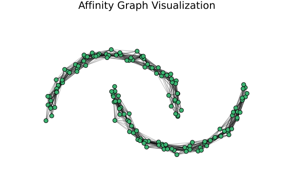

Affinities
The first step in spectral clustering is to construct a Similarity Graph (or Affinity Matrix) from the raw data points. This matrix represents how "close" or "similar" every point is to every other point.
SpectralClustering.jl provides different kernels to compute these affinities.
RBF Kernel
The Radial Basis Function (RBF) or Gaussian kernel is the most standard affinity measure. The similarity between two points $x_i$ and $x_j$ is given by:
\[W_{ij} = \exp\left(-\frac{||x_i - x_j||^2}{2\sigma^2}\right)\]
using SpectralClustering
# Using a standard RBF Kernel with sigma = 0.2
kernel = RBFKernel(sigma=0.2)RBFKernel(0.2)Local Scaling
The LocalScaling kernel dynamically adjusts the bandwidth ($\sigma$) for each individual point based on the distance to its $k$-th nearest neighbor. This is highly effective for datasets with varying densities.
# Using Local Scaling based on the 7th nearest neighbor
kernel_local = LocalScaling(7)LocalScaling(7)Visualizing the Affinity Graph
Because an affinity matrix $W$ is just an adjacency matrix of a weighted graph, we can visualize the connections between points! Here, we generate a "moons" dataset, compute the affinity matrix, and plot it.
We threshold the matrix to only keep strong connections (e.g., $W_{ij} > 0.1$), revealing the underlying manifold structure that the algorithm relies on.
using SpectralClustering
using Plots
using GraphRecipes
using Random
# 1. Generate data
rng = Xoshiro(42)
X, y = make_moons(rng, 150, noise=0.05)
# 2. Compute the affinity matrix using an RBF Kernel
W = compute_affinity(X, RBFKernel(sigma=0.2))
# 3. Sparsify the matrix for cleaner visualization (remove weak edges)
W_sparse = W .* (W .> 0.1)
# 4. Plot the graph over the actual data coordinates
graphplot(
W_sparse,
x = X[1, :], # True X coordinates
y = X[2, :], # True Y coordinates
curves = false, # Straight lines
nodeshape = :circle,
markercolor = :mediumseagreen,
nodesize = 0.3,
linewidth = 1.0,
linecolor = :gray,
linealpha = 0.3,
title = "Affinity Graph Visualization",
framestyle = :none,
legend = false,
size = (600, 400)
)